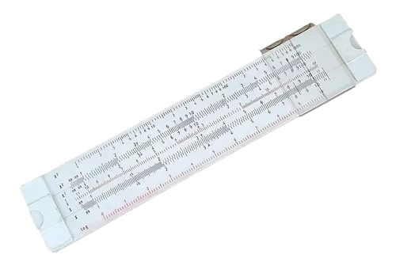

|  |
•Motivação: Necessidade de uma ferramenta para facilitar cálculos básicos, como adição e subtração.
•O que era: Um dispositivo manual para realizar operações aritméticas. •Características: Composto por contas deslizantes em varas ou cordas, usado em várias culturas antigas como na China, Mesopotâmia e Egito. •Curiosidades: Embora seja extremamente simples comparado aos computadores modernos, o ábaco é uma ferramenta eficaz para cálculos rápidos e ainda é usado em algumas partes do mundo. |
|
|
|
|